Galerie
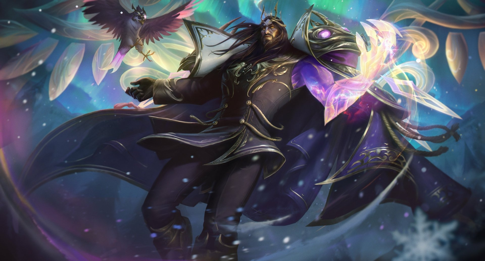
 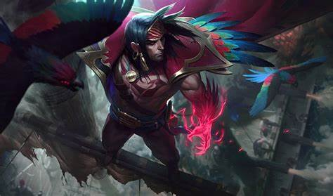
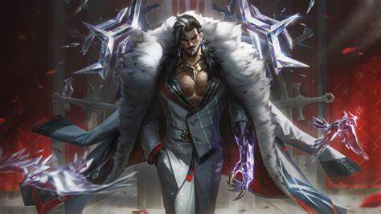
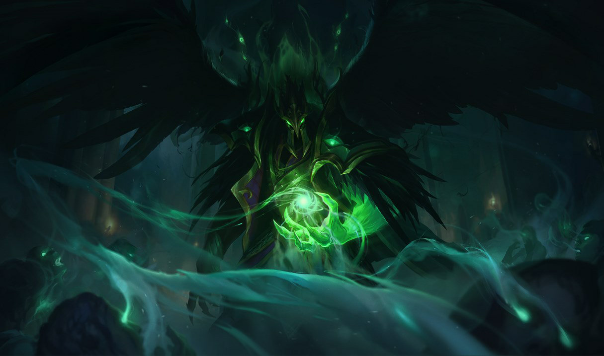
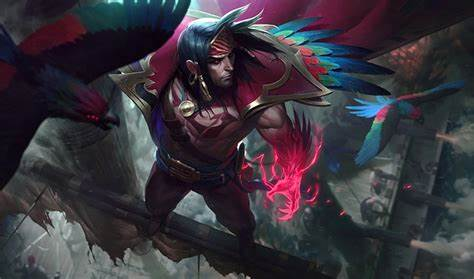
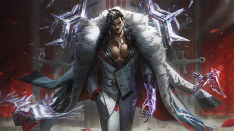
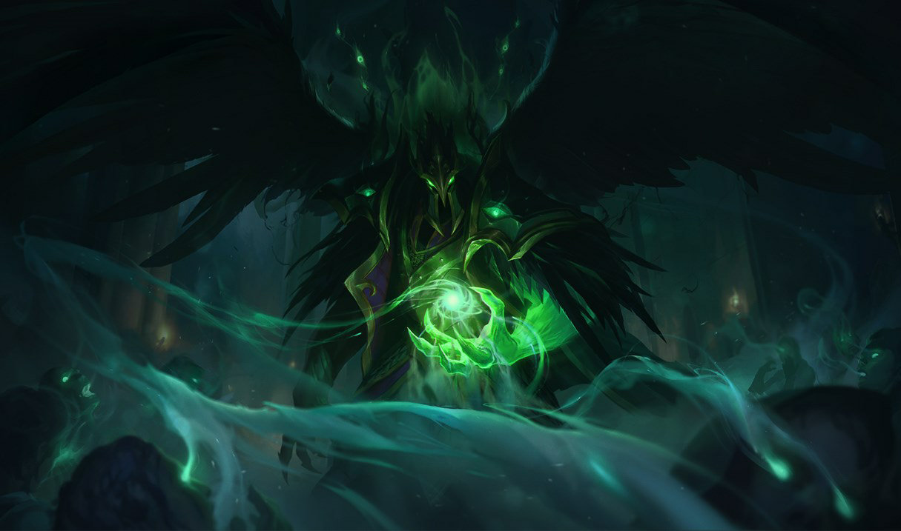
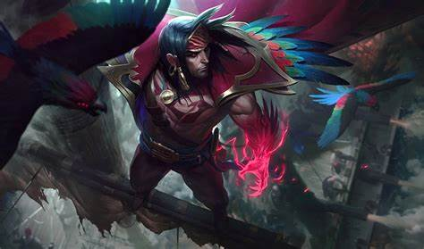
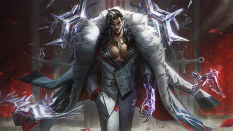
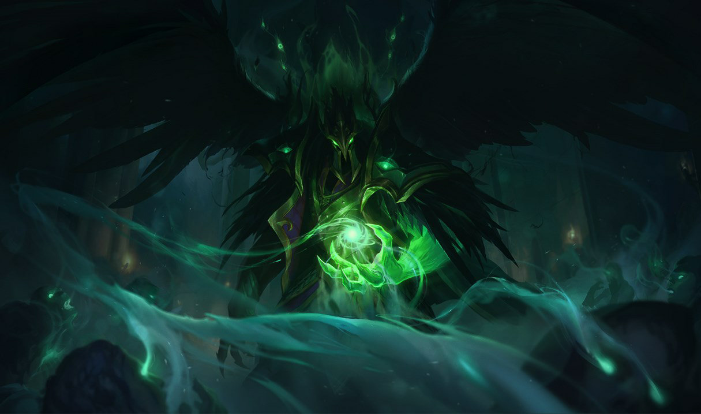
Swain est un personnage légendaire de la nation de Noxus. Anciennement un général brillant, il a utilisé ses talents de stratège pour conquérir et diriger Noxus d'une main de fer. Après avoir fait face à une trahison, il a été transformé en un homme plus puissant que jamais, possédant des pouvoirs magiques issus des âmes des ennemis qu'il a vaincus.
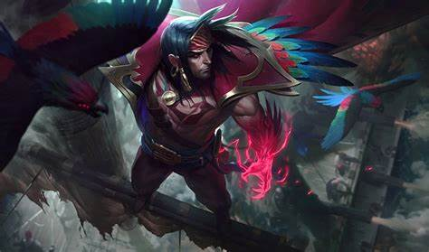
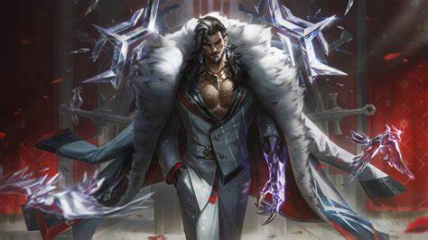
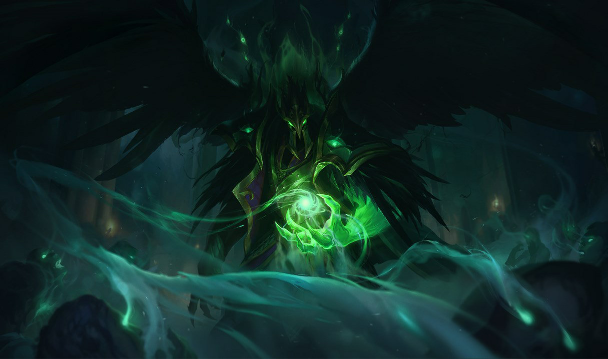
"Le pouvoir, comme les âmes que je récolte, se trouve dans les ténèbres."
"Noxus se redresse toujours, et j'en suis la lame qui tranche."